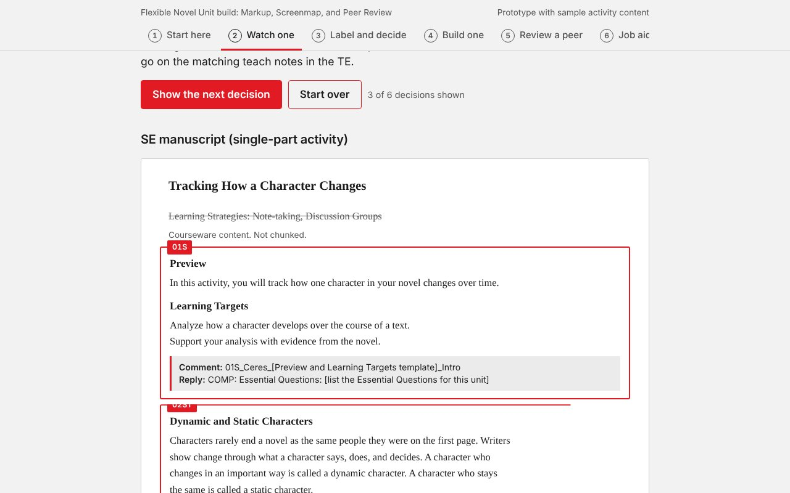
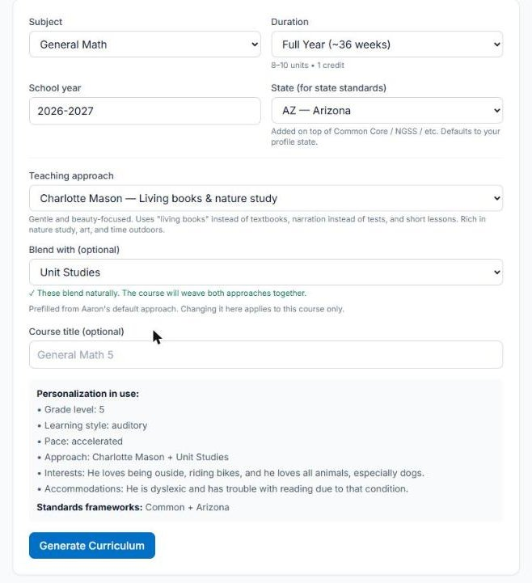
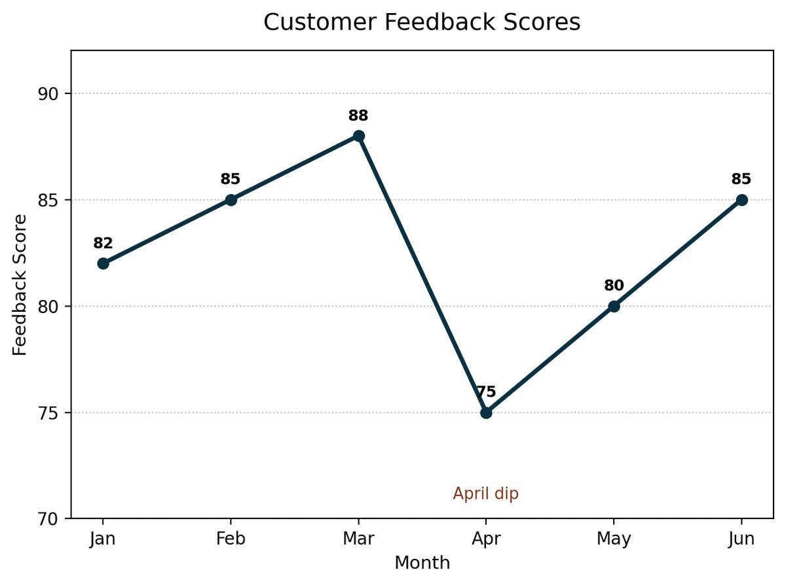

Hi, I'm Aaron Kermes.
I design learning that people can actually use.
Instructional designer with 13 years across corporate, higher education, and K-12 learning. I build the whole thing: analysis, curriculum, eLearning, instructor-led materials, the LMS, and the evaluation that shows whether it worked. Sometimes I build the tool, too.
Selected work
All six projects
Practice module, built in codeFlexible Novel Unit Practice Module
A 30-minute interactive module that replaced four hours of lecture. One HTML file, no authoring tool.

AI-generated curriculum with built-in practicePathways
A homeschool platform on the Claude API that turns a parent's goals into lessons, worksheets, and games. Live and in use.

Scenario-based activitiesData Literacy for Individual Contributors
Scenario activities built around charts generated in code, for a corporate training client. Observation to inference to decision.